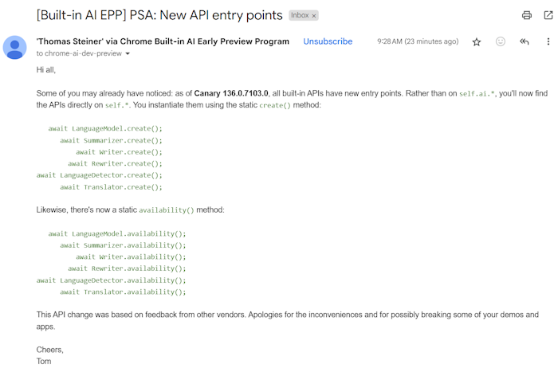
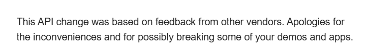

if('Translator' in window) {
// You can haz translation
}
if('Translator' in window) {
// You can haz translation
// but can you go from X to Y?
let translatorCapabilities = await window.Translator.availability({
sourceLanguage: 'en',
targetLanguage: 'zh'
});
console.log('English to Mandarin? ', translatorCapabilities);
}
const translator = await window.Translator.create({
sourceLanguage: 'en',
targetLanguage: 'zh',
monitor(m) {
m.addEventListener('downloadprogress', (e) => {
console.log(`Downloaded ${e.loaded} of ${e.total} percent.`);
});
},
});
let newString =
await translator.translate('What time is it?');
See the Pen Translator March 2025 by Raymond Camden (@cfjedimaster) on CodePen.
See the Pen Summary March 2025 by Raymond Camden (@cfjedimaster) on CodePen.
See the Pen MM + AI (v2) by Raymond Camden (@cfjedimaster) on CodePen.
document.modelContext.registerTool({
name: "bookSlot",
title: "Book a consultation slot",
description: "Reserve a 30-minute consultation.",
inputSchema: {
type: "object",
properties: {
date: { type: "string", format: "date" },
time: { type: "string" },
name: { type: "string" },
email: { type: "string", format: "email" }
},
required: ["date", "time", "name", "email"]
},
annotations: { readOnlyHint: false },
execute: async (input, client) => {
return await api.book(input);
}
});